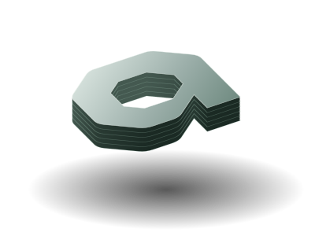
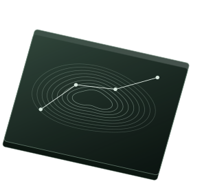
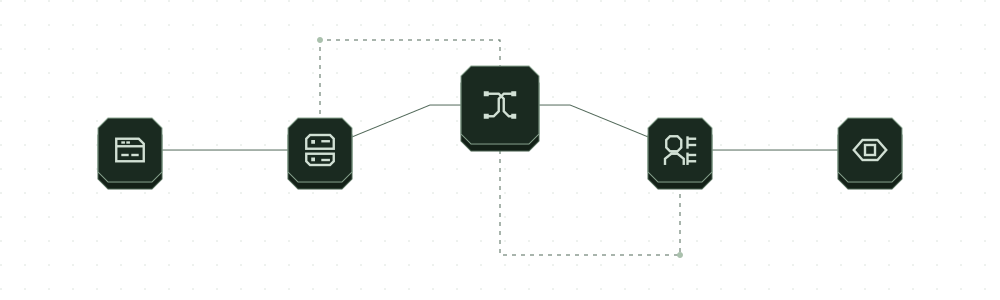
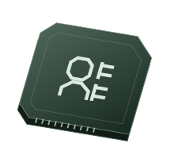
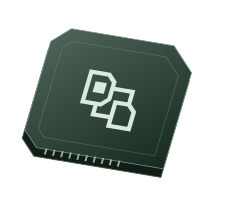

Juice Shop
70/77
Known routes foundkatana + jsluice: 1/77


❯ azhaq run -demo -db demo.db
URL http://127.0.0.1:40341/ target visited app status=200 title=Azhaq fixture
URL http://127.0.0.1:40341/api/status target visited api GET status=200 via=paths
GET
URL http://127.0.0.1:40341/app.js target visited script status=200
URL http://127.0.0.1:40341/auth target visited page status=200 title=Auth
URL http://127.0.0.1:40341/login target visited page status=200 title=Login via=paths
azhaq run: 6 map rows (3 pages, 1 address, 1 api, 1 script) · 57 requests · 0.2 s · db demo.db❯ azhaq roles -role anon -role "alice=Authorization: Bearer $TA" \
-role "bob=Authorization: Bearer $TB" -- -url http://localhost:5000/
401 → 200:79 → 200:79 http://localhost:5000/books/v1/aliceBook
[bob reads alice's object] · sensitive: secret
200:1.1k → 200:1.1k → 200:1.1k http://localhost:5000/users/v1/_debug
[anyone reads sensitive fields: password]❯ claude mcp add azhaq -- azhaq mcp \
-allow example.com -max-requests 5000Scope, request budget and pace are fixed at start.
Failures are included in a structured summary.
A stopped run resumes.
Read the MCP docsResults from the project benchmark, default profile.
| Job | Azhaq | Reference |
|---|---|---|
| Juice Shop · known routes | 70/77 | 1/77 · katana + jsluice |
| VAmPI · known routes | 12/12 | 1/12 · katana + jsluice |
| Gin and Juice · known routes | 3/3 | 2/3 · katana + jsluice |
Three checks did not pass:
One benchmark run, not a guarantee of results on other targets. Read the complete record.
SQLite workspaces.
Diffs between runs.

Less shell glue.
Query public sources for names, archived URLs, ownership and search records.
Replaces subfinder · gauResolve names; expand subdomains; find ASN prefixes and reverse DNS names.
Replaces dnsx · asnmapInspect HTTP and TLS; find routes in pages, scripts and API specs.
Replaces httpx · katana · jsluiceFind open TCP and UDP ports and identify their services.
Replaces naabu · nmap (port and service discovery)Discover directories and parameters from wordlists; fold catch-all responses.
Replaces ffuf · arjunTake screenshots of web services and group visually similar images.
Replaces gowitnessReplay requests across signed-in roles to compare read and write access.
Replaces manual work · AutorizeMatch versions to advisories and label results by available evidence.
Replaces manual workComparisons cover the capability described, not complete feature parity.
| Endpoint | anon | alice | bob |
|---|---|---|---|
| /books/v1/aliceBook | 401 | 200 | 200, Bob can read Alice's object |
| /users/v1/_debug | 200 | 200 | 200 |
bob reads alice’s object secret
anyone reads sensitive fields password

Compare responses across sessions.
Shared objects and exposed fields, side by side.

Fixed scope, budget and pace.
A map, with failures accounted for.
help -json$ claude mcp add azhaq -- \
azhaq mcp \
-allow example.com \
-max-requests 5000Export the map. Read other tools’ output back in.
GETs found during a run whose own path or API operation names a state change are held back by default. -send-state-changing sends them; an explicitly supplied target is always sent. Use -deny-path to exclude paths.
MIT licensed. One static Go binary.
Linux, macOS and Windows.
go install github.com/lilsadfoqs/azhaq/cmd/azhaq@latestdocker pull ghcr.io/lilsadfoqs/azhaqDownload the binary, checksums and signature bundle from the same release. Verify the checksums with the release’s sigstore instructions, then match the binary’s SHA-256 before running it.
Release assets & verification